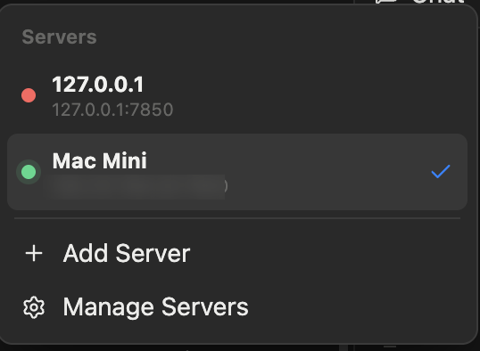
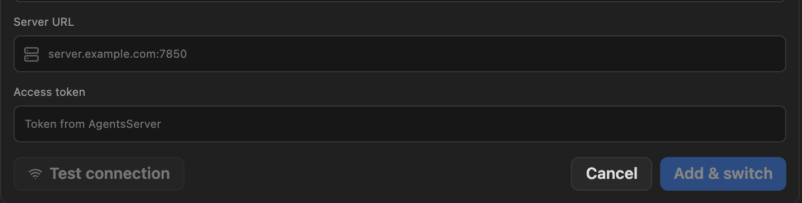

文档
开始第一个会话
服务器搭建并连接好之后，和 agent 开始一段对话只需一次点击。
首先，确认已连接
打开 AgentsDock，在服务器切换器里查看你的服务器。绿点表示服务器在线且已连接；红点表示应用无法访问它。

连接服务器需要两样东西：它的地址——服务器的 IP 或主机名加端口 7850——以及它的访问令牌。在应用里填好后，点击测试连接（Test connection）。

还没搭建服务器？搭建指南会一步步带你把服务器跑起来、找到它的地址和访问令牌，再连接你的设备。
开始会话
点击侧边栏顶部的 + 按钮——即新建会话（New chat）——或按 ⌘N。
发送第一条消息前，检查两件事：
- 工作目录——AgentsDock 会默认沿用上一个会话的文件夹；如果这次要在别的项目里工作，可以改成远程机器上的其他目录。
- agent provider——用左下角的切换器，在这台服务器可用的 Claude Code、Codex、Cursor 等 provider 之间切换。
然后输入第一条消息，按 Enter 发送。就这么简单——agent 在你服务器上的那个目录里运行，而这个会话拥有自己的持久终端，你随时可以从任何设备接入。